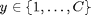
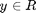
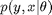
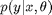
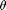
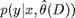
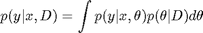

Supervised learning in pmtk3
Contents
Models
The following is a list (in alphabetical order) of pmtk models that are designed for supervised learning. We have classified the models based on whether they can be used for classification , regression , or both; whether they are generative models of the form  or discriminative models of the form ; and whether they are parametric (so  has fixed size) or non-parametric (so grows as the training set gets larger). We assume y is a low-dimensional scalar. Models for multivariate conditional density estimation (structured output classification/ regression) will be added later.
| Model | Description | Classif/regr | Gen/Discr | Param/non |
| discrimAnalysis | Discriminant analysis (linear, quadratic, regularized, shrunken) | Classif | Gen | Param |
| generativeClassifier | Any class conditional density | Classif | Gen | Param |
| knn | k nearest neighbors | Classif | Gen | Nonparam |
| linreg | Linear regression | Regr | Discrim | Param |
| logreg | Logistic regression | Classif | Discrim | Param |
| mlp | multi-layer perceptron (aka feedforward neural network) | Both | Discrim | Param |
| naiveBayes | Naive Bayes classifier | Classif | Gen | Param |
| rvm | Relevance vector machine | Both | Discrim | Nonparam |
| smlr | Sparse multinomial logistic regression | Both | Discrim | Nonparam |
| svm | Support vector machine | Both | Discrim | Nonparam |
More models may be added in the future.
Creating a model
To create a model of type 'foo', use one of the following
- model = fooCreate(...) % manually specify parameters
- model = fooFit(X, y, ...) % Compute ML or MAP estimate of params
- model = fooFitBayes(X, y, ...) % Compute posterior of params
where
- '...' refers to optional arguments (see below)
- X is an N*D design matrix containing the training data, where N is the number of training cases and D is the number of features.
- y is an N*1 response vector, which can be real-valued (regression), 0/1 or -1/+1 (binary classification), or 1:C (multi-class).
If X contains missing values, represented as NaNs, it is best to use a generative model (although not all models currently support this functionality). NaNs in y correspond to semi-supervised learning, which is not yet supported.
The output of create/ fit is a Matlab structure representing the model. However, we will sometimes call it an 'object', since it behaves like one in many respects.
In the case of fooCreate and fooFit, the parameters are point estimates. In the case of fooFitBayes, we store a distribution over the parameters, which may be represented parameterically or as a bag of samples. The details will be explained later.
Using a model for prediction
Once the model has been created, you can use it to make predictions as follows
[yhat, py] = fooPredict(model, Xtest) % plugin approximation [yhat, py] = fooPredictBayes(model, Xtest) % posterior predictive
Here Xtest is an Ntest*D matrix of test inputs, and yhat is an Ntest*1 vector of predicted responses of the same type as ytrain (e.g., if ytrain was {-1,+1}, then ytest will also be {-1,+1}; if ytrain was {1,2}, then ytest will be converted to {1,2} as well.) For regression yhat is the predicted mean, for classification yhat is the predicted mode (most probable class label). The meaning of py depends on the model, as follows:
- For regression, py is an Ntest*1 vector of predicted variances.
- For binary classification, py is an Ntest*1 vector of the probability of being in class 1.
- For multi-class, py is an Ntest*C matrix, where py(i,c) = p(y=c|Xtest(i,:),params)
The difference between predict and predictBayes is as follows. predict computes

which "plugs in" a point estimate of the parameters, while predictBayes computes

which integrates out the unknown parameter. This is called the (posterior) predictive density. In practice, the Bayesian approach results in similar (often identical) values for yhat, but quite different values for py. In particular, the uncertainty is reflected more accurately in the Bayesian approach, as we illustrate later.
More information
Because supervised learning is such a large topic, we have created various sub-pages describing different approaches in more detail, as follows:
This page was auto-generated by calling pmtkPublish(C:\kmurphy\GoogleCode\pmtk3\docs\tutorial\tutSupervised.m) on 08-Sep-2010 17:21:31